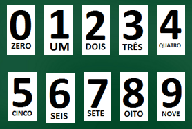

Tabuada é a organização em tabela das quatro operações Aritmética da matemática:
Adição
Subtração
Multiplicação
Divisão
Dessa forma, para cada operação existe uma tabuada.
Passo 1: Ver, ler em voz alta e repetir. Para se familiarizar com a tabuada.
Passo 2: Click nas respostas corretas para as questões.
Passo 3: Preencha as suas respostas para as questões mistas e verifique se acertou em todas.
Passo 4: As questões de escolha múltipla irão ajudá-lo a melhorar olhando para as questões de forma diferente.
As operações são realizadas em relação aos dez algarismos:
|  |